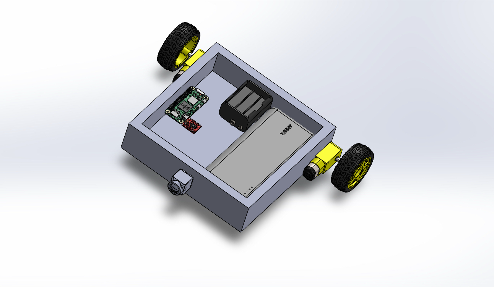
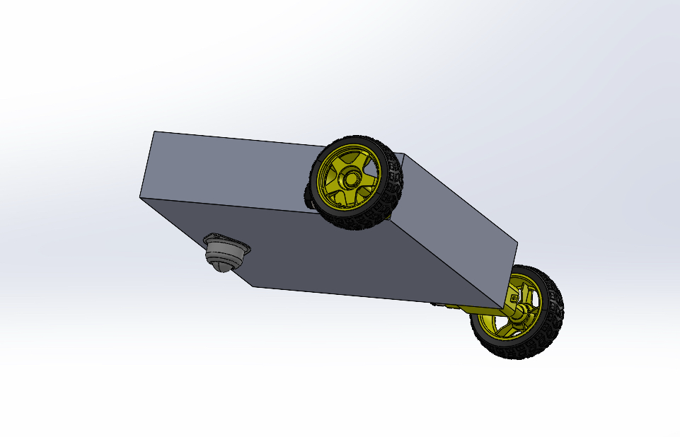
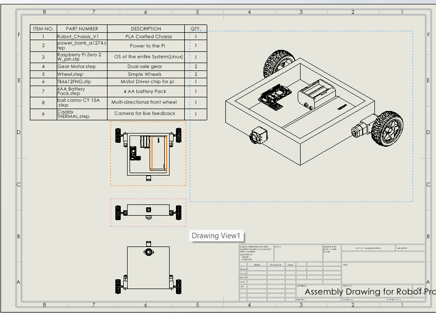
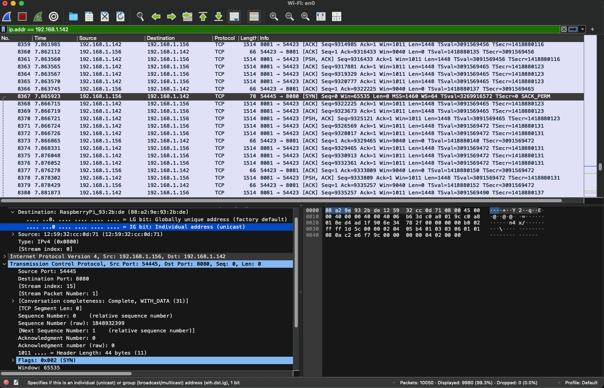

Unmanned ground vehicle built around embedded systems and real-world integration.
This project combines Raspberry Pi hardware, C++ software, GPIO motor control, Linux services, browser-based control, CAD design, and TCP/IP networking into a functional unmanned ground vehicle system.
Target User & Mission Vision
Designed for military, law enforcement, and emergency response applications, this platform demonstrates remote inspection, scouting, and control capabilities.
The focus is not just motion, but system-level integration of embedded hardware, communication, and software.
System Architecture
The system uses a client-server model where a browser sends commands over TCP/IP to a Raspberry Pi, which processes the input and controls the motors through GPIO.
Browser UI
TCP/IP
Linux + C++
Motor Signals
UGV Movement
CAD Model & Mechanical Design
The chassis was designed to support embedded hardware, motor drivers, and future sensor integration with a focus on simplicity and modularity.



Future iterations will improve weight distribution, cable management, and structural efficiency.
Networking Demonstration
The Raspberry Pi acts as a server on port 8080, receiving commands from the browser interface over TCP/IP.

This Wireshark capture shows a SYN packet initiating the TCP connection, validating real client-server communication.
Code Architecture
The system is structured using modular C++ code, Linux services, and a web interface for control logic.